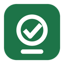
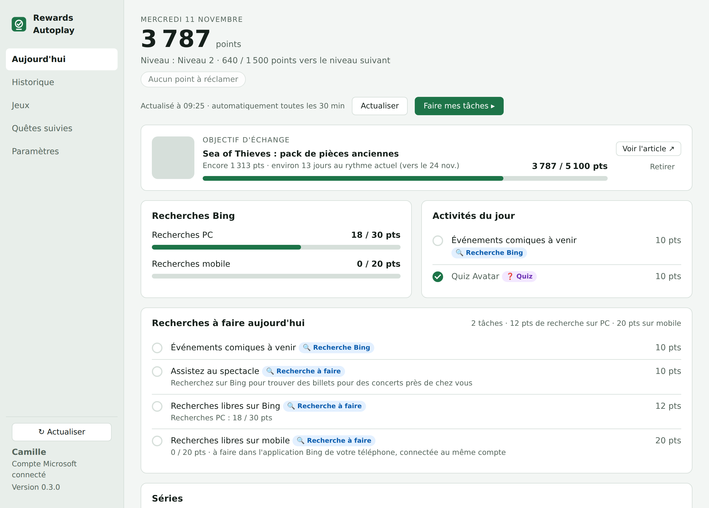
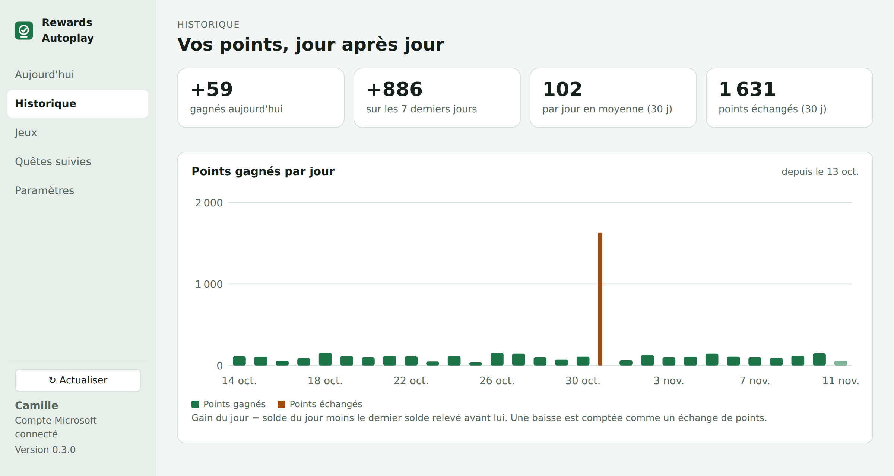
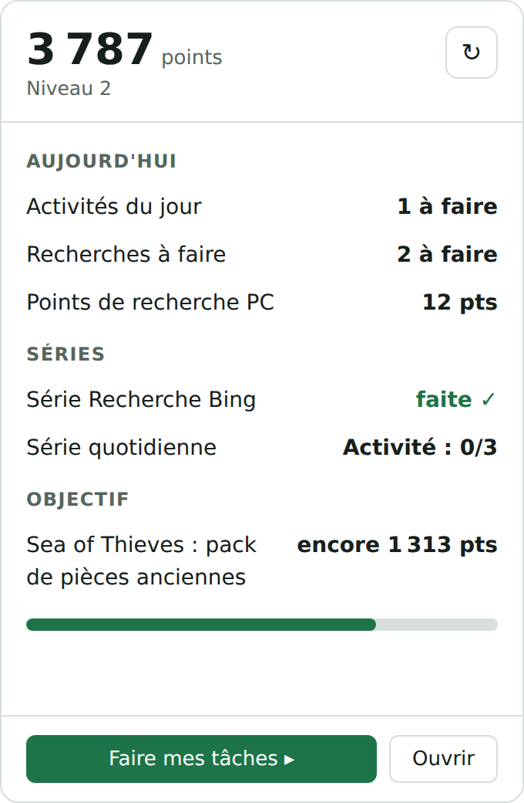

La journée en un coup d'œil
Solde, niveau, points à réclamer, activités du jour, cartes « Explorer sur Bing » et « Continuer à gagner », exactement comme sur le site.

Rewards AutoplayRewards Autoplay reste discrètement dans la zone de notification. Il vous montre ce qu'il reste à faire aujourd'hui : activités, recherches Bing, séries et quêtes. Il vous ouvre chaque tâche au bon endroit, et vous rappelle ce qui risque d'être perdu.
Windows 10 et 11 · installateur de la dernière version

L'application lit votre tableau de bord Microsoft Rewards et le présente sous forme de liste de tâches. Rien n'est fait à votre place : vous gardez la main, elle vous fait gagner du temps.
Solde, niveau, points à réclamer, activités du jour, cartes « Explorer sur Bing » et « Continuer à gagner », exactement comme sur le site.
Chaque tâche porte un badge : recherche, quiz, puzzle, site partenaire. Pour une consigne « Recherchez sur Bing… », le champ de recherche est prérempli : il ne reste qu'à valider.
Une session guidée ouvre vos tâches une par une dans une fenêtre déjà connectée à votre compte, avec un bouton « Tâche suivante ». Les points sont bien validés.
Un rappel par jour à l'heure choisie, les séries dont l'étape du jour n'est pas faite, les tâches qui se déverrouillent, les quêtes qui expirent dans moins de 48 heures.
Les points gagnés chaque jour et en moyenne, et un objectif d'échange : les points qui manquent pour l'article visé et la date estimée à votre rythme.
Le détail de chaque quête, étape par étape, une étoile pour suivre celles qui vous intéressent, et une recherche par jeu dans les quêtes et le catalogue d'échange.
Fermer la fenêtre ne quitte pas l'application. Un clic sur l'icône affiche la journée ; les données se mettent à jour toutes seules, et l'application aussi.


Captures réalisées avec des données d'exemple.
RewardsAutoplay_Setup.exe, puis lancez-le. Il s'installe pour votre seul compte Windows, sans droits administrateur.
L'installateur n'est pas encore signé : SmartScreen peut afficher un avertissement. Cliquez sur Informations complémentaires puis Exécuter quand même.
La connexion se fait sur la page officielle de Microsoft Rewards. Ensuite, l'application se met à jour d'elle-même à chaque nouvelle version.
Vous vous connectez sur la page officielle, dans une fenêtre dédiée. L'application ne voit jamais votre mot de passe : elle garde seulement la session ouverte pour lire vos points.
Les conditions de Microsoft Rewards interdisent les robots et les recherches automatiques. L'application ouvre les tâches quand vous le demandez et prépare les recherches, mais c'est vous qui les lancez.
Réglages, historique et quêtes suivies sont enregistrés localement. Aucun serveur intermédiaire, aucune statistique d'utilisation envoyée.
Chaque mise à jour est signée avec la clé du projet et vérifiée avant installation. Le code est public : vous pouvez le lire et le compiler vous-même.